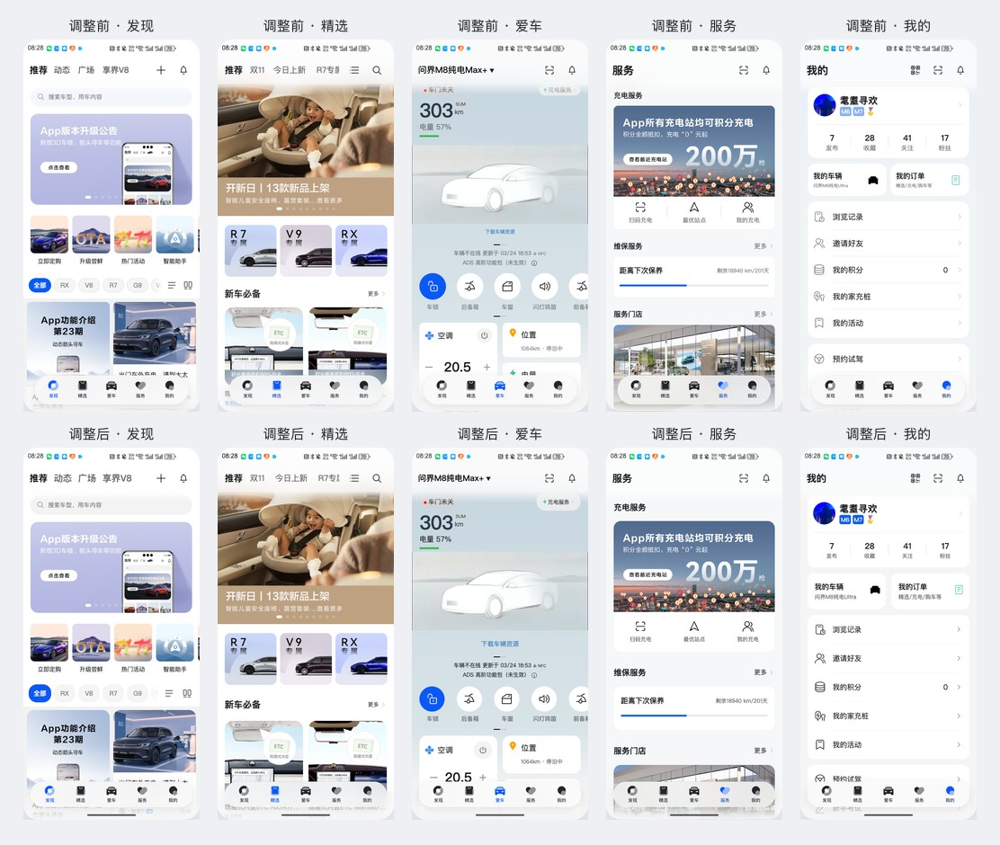

HIMA 特性与组件核验清单
2026-11-08 · os7.html 当前网页，不包括原生App或历史设计探索
原生 ArkUI/HDS 组件接入为0；现有页面由 HTML、CSS、JavaScript 实现。官方能力名称真实存在，网页效果仅为参考方向或通用交互，不能计为系统能力已接入。
本仓库没有.ets、oh-package.json5、build-profile.json5及原生桥接；package.json仅有静态网页启动命令；入口加载reference/os7系列浏览器脚本。
逐页组件样式自查与整改
五个一级页面、其他频道和已实现的搜索/详情/弹层已逐项检查。查看逐页清单、官方规则与项目取值。下图上排为调整前，下排为调整后，来自实际浏览器截图。


特性清单
| ID / 特性 | 当前状态 | 实际实现与位置 | 依据与处理 |
|---|---|---|---|
| F01 / 沉浸式系统材质 | 网页模拟，未接入 | backdrop-filter、透明背景、CSS自定义变量；没有折射、系统自动反色或uiMaterial调用。os7.css；os7-top.css；os7-refinement.css | 保留网页模糊；撤下已适配原生材质的表述。ULTRA_THIN等仅用于研究映射；同名CSS变量不是枚举调用，REGULAR变量未实际消费。 S1 |
| F02 / 导航渐变模糊与滚动联动 | 网页模拟，未接入 | 滚动监听、CSS遮罩、统一顶部背景与吸顶筛选。os7.js / syncFilterChrome、updateSurface；os7-refinement.css | 参考HDS导航的滚动背景方向，未实例化HdsNavigation，也没有调用ScrollEffectType.GRADIENT_BLUR。 S2 |
| F03 / 系统空间动效：形变、流光、粒子 | 未实现 | 菜单与弹层仅有普通CSS位移、透明度及自定义拖拽。os7.js / dismissOverlay、enableSheetDrag；os7-refinement.css | 不计为原生空间动效。清除未使用的自绘扫光样式和关键帧；未调用ArkUI Particle或Slider的系统粒子效果。 S1 |
| F04 / 弹簧、频道滑动与拖拽回弹 | 通用网页交互 | requestAnimationFrame与HimaSpring积分；默认stiffness=520、damping=42。os7-motion.js；os7.js / makeSpring | 参数为项目自定，不称为鸿蒙原生参数，也不把通用交互计为OS7专属特性。 无专属系统能力声明 |
| F05 / 深浅色与跟随系统 | 浏览器能力 | prefers-color-scheme媒体查询与自定义颜色变量。os7.js / systemTheme、applyPreferences；os7-refinement.css | 只读取浏览器暴露的偏好，没有调用HarmonyOS主题管理或系统颜色资源。 非鸿蒙专属 |
| F06 / 减少动态效果 | 浏览器能力 | prefers-reduced-motion、结束自定义弹簧及压缩CSS过渡。os7.js / systemMotion、applyPreferences；os7.css | 保留可访问性功能，不称为原生无障碍接口已接入。 非鸿蒙专属 |
| F07 / 智感握姿 | 已撤下无依据演示 | 此前是手动选择左右手并水平移动底栏，未读取传感器。os7.html、os7.js、os7.css 的旧grip分支已移除 | 移除握姿开关、自绘辅助频道条及底栏迁移。旧URL的grip参数被忽略并移除；待原生方案与证据齐备后另行设计。 S3 |
| F08 / 设备算力与材质等级自适应 | 未接入 | 仅有CSS @supports不支持背景滤镜时的实体降级，透明度开关由用户手动选择。os7.css；os7-refinement.css | 手动透明度不等于系统强/均衡/弱档，不读取uiMaterial.getGlobalMaterialLevel或hdsMaterial.getSystemMaterialTypes。 S1、S2 |
| F09 / 鸿蒙黑体与系统语义资源 | 未接入 | font-family仅列出HarmonyOS Sans候选并回退系统字体；颜色与间距是项目CSS值。reference.css；os7.css；os7-refinement.css | 没有随包字体、@font-face或系统$r资源调用；不能声称所有设备实际使用鸿蒙黑体、官方Token或已达官方对比度标准。 代码核验 |
| F10 / MiniBar与多设备原生适配 | 未实现 | 固定392×826.667画布缩放、网页媒体查询与28px底部避让示意；不是系统避让接口。reference.js；reference.css；os7-refinement.css | 未实现持续任务MiniBar、折叠态监听、原生安全区或多设备系统导航；手机比例展示不能当作这些能力的验收。 代码核验 |
组件清单
下表的原生名称只表示后续选型方向；当前没有一项计为已接入。
| ID / 组件 | 实际网页实现 | 代码位置 | 原生映射的真实状态 |
|---|---|---|---|
| C01 / 状态栏与顶部导航 | HTML header、固定时间文本、截图状态图标和CSS背景。 | reference.js / status、createPage；os7.js / syncFilterChrome；os7-components.css（样式） | HdsNavigation或Navigation/NavDestination（未来选型，当前未接入） S1、S2 |
| C02 / 底部一级导航 | HTML nav/button、自绘SVG和CSS悬浮背景。 | reference.js / navIcon；os7.js；os7.css；os7-components.css（样式） | HdsTabs（未来选型，当前未接入） S2 |
| C03 / 顶部频道与车型筛选 | HTML按钮、ARIA tab、横向滚动、CSS选中态及JS吸顶。 | reference.js / brands、setupChannels；os7.js / syncFilterChrome；os7-components.css（样式） | 未选型；通用导航和业务筛选，不是鸿蒙专属组件 代码核验 |
| C04 / 卡片、列表、宫格、分类分栏 | HTML article/div、CSS grid/flex与overflow滚动。 | reference.js / feed、shop、openCategory；os7-media.js；os7-components.css（样式） | 业务结构，尚未实施原生组件选型 代码核验 |
| C05 / 搜索与搜索结果 | HTML form/input/button；精选为独立网页路由，发现为自定义面板。 | os7-routes.js / openSearch、results；os7.js / openSearch；os7-components.css（样式） | 未接入原生搜索组件；不能因外形相似计为已使用 代码核验 |
| C06 / 详情、返回与路由栈 | HTML section与浏览器history、popstate、inert。 | os7-routes.js / route、popTo、refresh；os7-components.css（样式） | Navigation/NavDestination（未来选型，当前未接入） S1 |
| C07 / 半模态：规格、搜索、车型排序 | DOM遮罩、role=dialog、CSS定位、自定义拖拽；不同面板未统一具备同等拖拽行为。 | os7-routes.js / openSpec；os7.js / componentSheet、openSort、enableSheetDrag；os7-components.css（样式） | ArkUI半模态转场（未来选型，当前未接入） S1 |
| C08 / 发布菜单 | HTML自定义菜单与按钮，CSS入场。 | os7.js / openTopAction；os7-refinement.css；os7-components.css（样式） | ArkUI菜单控制（未来选型，当前未接入） S1 |
| C09 / 对话层与Toast | DOM section/div、遮罩和role=status；没有native弹窗调用。 | reference.js / showDownload、showToast；os7-top.css；os7-components.css（样式） | AlertDialog/CustomDialog/PromptAction为官方可用路径，当前未选型接入 S1 |
| C10 / 按钮、开关、文本与图标 | HTML button/input、ARIA状态、系统回退字体、SVG与截图资源。 | os7.html；reference.js；os7-routes.js；os7-components.css（样式） | 未使用ArkUI Button/Toggle/Text/SymbolGlyph；普通网页控件不能计入 代码核验 |
| C11 / 商品图集与文章图片 | HTML img与横向overflow、scroll-snap。 | os7-routes.js / product、article；os7-routes.css；os7-components.css（样式） | 业务内容展示，尚未实施原生组件选型 代码核验 |
| C12 / 消息、扫码、评论与交易状态 | 本地演示消息、模拟识别、评论草稿与购买演示边界。 | os7.js / openTopAction；os7-routes.js / article、openSpec；os7-components.css（样式） | 没有接入Push Kit、Scan Kit、真实发布或支付服务 代码核验 |
官方证据与未核实事项
- S1 华为：沉浸光感简介：2026-11-08取得正文，确认API 26.0.0、五级材质、系统自适应、空间动效及组件生效范围。
- S2 华为：UI Design Kit沉浸光感：2026-11-08取得正文与示例，确认HdsNavigation/HdsTabs、systemMaterialEffect、自适应材质和GRADIENT_BLUR示例。
- S3 华为：智感握姿设计指南：本轮未取得有效正文；不据此声称网页的底栏迁移、辅助频道条或弹簧参数是官方要求。
资料源：可审计数据 · 同源Markdown记录